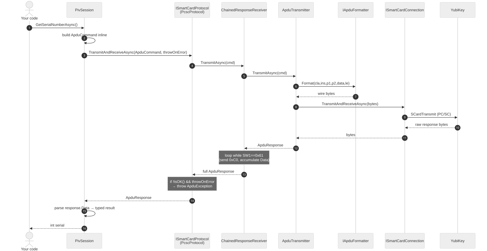
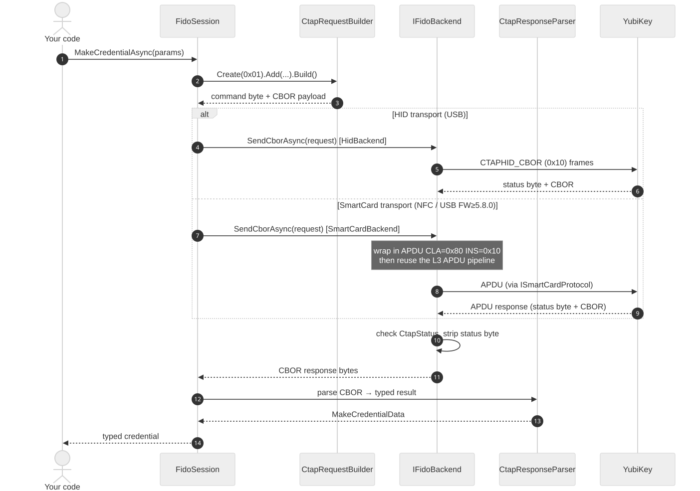

Previous slide Next slide Toggle fullscreen Toggle overview view Open presenter view
YubiKit .NET v2
A tour for people who live in the other SDKs
yubikey-manager · yubikit-android · yubikit-swift · python-fido2
Async on the golden path — every applet operation is async; the few syncInstall only what you use — ten packages, not one monolith; a PIV app shipsNative AOT — ships as a standalone native binary: no JIT, no runtime install,Event-driven discovery — OS notificationsOne session shape — learn one applet, you know the rest
Branch yubikit @ d04d59aa · 2026-09-07
Host App → SDK → Session → YubiKey

The pipeline in code
var keys = await YubiKeyManager.FindAllAsync();
IYubiKey key = keys[0 ];
await using var piv = await key.CreatePivSessionAsync();
var cert = await piv.GetCertificateAsync(PivSlot.Authentication);
Every layer boundary is async. There is no synchronous escape hatch on the golden path.
Three ways to open a session
await using var piv = await key.CreatePivSessionAsync();
await using var piv = await key.CreatePivSessionAsync(
new SessionCreationOptions
{
PreferredConnectionType = ConnectionType.SmartCard,
ScpKeyParameters = scpKeyParams,
});
await using var conn = await key.ConnectAsync<ISmartCardConnection>();
await using var piv = await PivSession.CreateAsync(conn);
await using var mgmt = await ManagementSession.CreateAsync(conn);
A for one-shot work. B when the default transport is wrong, or you need SCP.C when several applets share one connection — sequentially; one connection admits
Transports and interfaces

Command invocation: smart card / APDU

PIV · OATH · OpenPGP · Management · SecurityDomain · YubiHSM Auth
Command invocation: FIDO HID / CTAP

FIDO2 · WebAuthn. YubiOTP rides OTP-HID, a third framing.
Applets are not one-transport-each
[Flags] ConnectionType: Unknown=0 · Hid=1 · HidFido=2 · HidOtp=4 · SmartCard=8 · All
Applet
Default transport order
Management SmartCard → HidFido → HidOtp
FIDO2 HidFido → SmartCard
WebAuthn inherits FIDO2's order
YubiOTP SmartCard → HidOtp
PIV · OATH · OpenPGP · SecurityDomain · YubiHSM
SmartCard only
FIDO2's SmartCard path is NFC, or USB-CCID on firmware 5.8.0+ .
YubiOTP prefers SmartCard , not HID — on a CCID-enabled key the YubiOTP snippetSupplying ScpKeyParameters forces SmartCard when no preference is given.
await using var mgmt = await key.CreateManagementSessionAsync(
new SessionCreationOptions { PreferredConnectionType = ConnectionType.HidFido });
Device discovery

Two operation models
A — One-shot. Ask, act, exit. No monitoring.
var keys = await YubiKeyManager.FindAllAsync();
await using var piv = await keys[0 ].CreatePivSessionAsync();
B — Long-lived. Start monitoring, react to arrivals for the process lifetime.
YubiKeyManager.StartMonitoring();
await foreach (var e in YubiKeyManager.WatchAsync(ct))
{
if (e.Action == DeviceAction.Added)
await OnKeyInserted(e.Device);
}
Same IYubiKey, same sessions. The models differ only in who keeps the cache fresh.
Which model serves whom
A — One-shot B — Monitored
Who
CLI tools, scripts, CI, installers
Desktop apps, daemons, services, tray UIs
Lifetime
seconds
hours
Cache kept fresh by
you , via forceRescanthe monitor
forceRescan: trueneeded on every re-poll
redundant — drop it
Cost when idle
none
one listener, no polling
while (!ct.IsCancellationRequested)
{
var keys = await YubiKeyManager.FindAllAsync(forceRescan: true );
...
await Task.Delay(1000 , ct);
}
The trap. Model A without forceRescan scans once, then returns that firstforever . It looks like it works, because the first call is correct.forceRescan: true, or switch to model B.
ykman's CLI is model A. yubikit-android and yubikit-swift apps are model B.
Discovery guarantees
Discovery is publish-first and degraded-state tolerant — a key is published as soonSerialNumber can
Both models inherit this. Neither model can promise a key that arrives during a scan
Merging: one physical key, many interfaces
A single YubiKey appears as several OS-level devices — a PC/SC reader, a FIDO HIDIYubiKey.
USB PC/SC reader ─┐
FIDO HID device ─┼─→ CompositeDeviceMerger ─→ one IYubiKey
OTP HID device ─┘
NFC reader ───→ stands alone, never merged
Merge inputs per interface: Connection · IsUsb · Pid · Serial · DeviceInfo ·TopologyKey (Windows Container ID; null on macOS and Linux)
What happens to an NFC key
NFC is discovered and monitored exactly like USB — the sameSCardGetStatusChange listener covers NFC readers, so tap and remove raise theAdded / Removed events, and the same repository cache holds them.
What differs is grouping , and only grouping:
Merging needs USB evidence — Product ID from the reader name, or a Windows
So an NFC-presented key is published standalone , with a transport-shapedDeviceId (pcsc:*), not a ykphysical:* one.
Tap the same key over USB and NFC at once and you get two IYubiKey objects .
The honest correlator is SerialNumber — read it from both and compare.
This is conservative on purpose: a wrong merge is worse than no merge.
Identity: what is stable, what is not
Surface
Guarantee
DeviceIdDiagnostic only. Not durable identity.
SerialNumbernull → value, never back to null.
Interface-set key
Internal, machine-local, never public
Equals / GetHashCodeReferential — same object, or not equal
SerialNumber may stay null forever : reads fail, budgets exhaust, and theIt can flip null → value after publication, with no device event.
A key whose interface set changes is republished as a new object that inherits
Who actually wants DeviceId?
Its value is that the prefix names the evidence tier that produced it:
Shape
Means
hid:{reader}:{usage}a lone HID interface — nothing proved a physical key
pcsc:*a lone smart-card reader, e.g. anything over NFC
ykphysical:pid:{PID}grouped by USB Product ID
ykphysical:topology:{id}grouped by Windows Container ID
ykphysical:{serial}grouped and serial-confirmed — the strongest
The persona is whoever is holding a log at 2am. Support engineers triaging a"did — and DeviceId
Not for application developers. If you are writing app logic, use SerialNumber.DeviceId is not durable: it changes when evidence changes, by design.
Observability: the whole device-event API
YubiKeyManager.StartMonitoring();
await foreach (var e in YubiKeyManager.WatchAsync())
{
Console.WriteLine($"{e.Action} : {e.Device.DeviceId} " );
}
public enum DeviceAction { Added, Removed }
public class DeviceEvent { IYubiKey Device; DeviceAction Action; DateTime Timestamp; }
The monitoring control surface is five members: StartMonitoring(),StartMonitoring(TimeSpan), StopMonitoring(), WatchAsync(ct), IsMonitoring.Shutdown() / ShutdownAsync() also stop monitoring as part of tearing the manager down.
How the peers surface device changes
SDK
Attach / detach
.NET v2 await foreach WatchAsync() — OS-notification driven
yubikey-manager (Python)Poll only — scan_devices() in a sleep loop
yubikey-manager (rust)monitor_yubikeys(cb) — udev / WM_DEVICECHANGE / IOHIDManager
yubikit-androidCallbacks — Callback<T>.invoke attach, setOnClosed detach
yubikit-swiftConnect-on-demand — makeConnection() polls; waitUntilClosed()
python-fido2None — list_devices() enumerates on call
Two things worth noting: rust has a third variant, YubiKeyEvent::Changed, that .NETmakeConnection() is a 1-second poll loop internally, not an
Observability: logging
Off by default. No output, no logger, no overhead until you opt in.
var keys = await YubiKeyManager.FindAllAsync();
YubiKitLogging.Configure(loggerFactory);
Six documented setups: static, DI, ASP.NET Core, appsettings.json, Serilog, none.Yubico.YubiKit.Piv.PivSession,Yubico.YubiKit.Core.Transports.SmartCard.* — so you can filter per applet or
Level
What lands there
TraceRaw APDU / CBOR bytes, protocol steps
DebugState transitions, cache updates
InformationSession creation, major operations
Warning / ErrorRecoverable fallback / operation failure
Never logged: PINs, PUKs, passwords, private keys, session keys.Debug.
Logging: we already agree across the SDKs
SDK
Default
Facade
Enable
Logger obtained
.NET v2 silent
Microsoft.Extensions.LoggingYubiKitLogging.Configure(f)static
ykman (py)
silent
stdlib logging
init_logging(level)per-module
ykman (rust)
silent
log crateinstall a log impl
macros, per call site
yubikit-android
silent
slf4j add a binding
per-class
yubikit-swift
silent
OSLogon by platform
static, per domain
Three conventions we already share, without ever having agreed them:
A facade, never a concrete logger. Every SDK binds to an abstraction and letsSilent until configured. No SDK here prints anything out of the box.Raw protocol bytes go to Trace. Android says so explicitly; .NET puts APDU
Nobody injects a logger into a session. All five obtain one statically orILogger" is not a .NET quirk — it is the
Worth knowing: Android used to have a settable static Logger.setLogger() and
Going below the applet API: three tiers
Tier
What it gives you
What you take on
0 — Applet session applet semantics, feature gates, protocol state
nothing
1 — Raw session APDU/CTAP framing, chaining, overlap refusal, SCP
payload semantics
2 — Raw connection a pipe
everything
await using var piv = await key.CreatePivSessionAsync();
await using var raw = await key.CreateRawSmartCardSessionAsync();
await using var conn = await key.ConnectAsync<ISmartCardConnection>();
var rsp = await conn.TransmitAndReceiveAsync(rawBytes);
Tier 1 does not select an applet or apply feature gates. At Tier 2 you own APDU
Dropping a tier does not drop transport safety — raw sessions still obey
This is the supported answer for teammates hand-rolling APDUs in ykman today:
One session shape — for eight of the nine
await using var s = await key.CreateXSessionAsync(options, cancellationToken);
A sealed XSession plus a matching IXSession interface
IYubiKey.CreateXSessionAsync(...) — session owns a hidden connectionXSession.CreateAsync(connection, ...) — session borrows yoursBoth take SessionCreationOptions? then a defaulted CancellationToken
Always await using
WebAuthn is the deliberate exception. It is not an applet session. It returns aWebAuthnClient, takes a required origin and public-suffix checker, and has its own"WebAuthn is not an applet session and has its own factory test."
Ownership: who disposes the connection
await using var piv = await key.CreatePivSessionAsync();
await using var conn = await key.ConnectAsync<ISmartCardConnection>();
await using var mgmt = await ManagementSession.CreateAsync(conn);
var info = await mgmt.GetDeviceInfoAsync();
One key admits one live connection. One connection admits one live session —Attach throws ConnectionInUseException. Dispose session N before creatingDisposeAsync; sync Dispose blocks to drain.
SDK
Who owns the connection
.NET v2 Both, named explicitly at the call site
ykman (Python)
Caller — with dev.open_connection(...)
ykman (rust)
Session consumes it; returns (Error, Connection) on failure
yubikit-android
Session borrows, but close() closes the connection too
yubikit-swift
Caller owns; session never closes it
Management
Read device info, toggle capabilities, write device config.
var info = await key.GetDeviceInfoAsync();
ykman (Python)
mgmt = ManagementSession(conn)
info = mgmt.read_device_info()
yubikit-swift
let s = try await Management .Session .makeSession(connection: connection)
let info = try await s.getDeviceInfo()
Delta: .NET gives Management a device-level shortcut — no session boilerplate for theSmartCard → HidFido → HidOtp. Swift covers two, with SmartCardConnection and FIDOConnection overloads.
PIV
Certificates, key pairs, PIN/PUK, attestation.
await using var piv = await key.CreatePivSessionAsync();
var cert = await piv.GetCertificateAsync(PivSlot.Authentication);
ykman (Python)
piv = PivSession(conn)
cert = piv.get_certificate(SLOT.AUTHENTICATION)
yubikit-android
PivSession piv = new PivSession (smartCardConnection);
X509Certificate cert = piv.getCertificate(Slot.AUTHENTICATION);
Delta: all three return a real certificate type — X509Certificate2,x509.Certificate, java.security.cert.X509Certificate. The .NET difference isnullability : an empty slot returns null rather than throwing.
OATH
TOTP and HOTP credentials, calculate codes, applet password.
await using var oath = await key.CreateOathSessionAsync();
var codes = await oath.CalculateAllAsync();
ykman (Python)
oath = OathSession(conn)
creds = oath.list_credentials()
yubikit-android
OathSession oath = new OathSession (conn);
Map<Credential, @Nullable Code> codes = oath.calculateCodes();
Delta: naming, the closest convergence in the deck — .NET'sIReadOnlyDictionary<Credential, Code?> and Android's Map<Credential, @Nullable Code>
OpenPGP
Card data, key slots, sign / decrypt / authenticate, PIN management.
await using var pgp = await key.CreateOpenPgpSessionAsync();
var data = await pgp.GetApplicationRelatedDataAsync();
ykman (Python)
pgp = OpenPgpSession(conn)
data = pgp.get_application_related_data()
yubikit-android
OpenPgpSession pgp = new OpenPgpSession (conn);
ApplicationRelatedData d = pgp.getApplicationRelatedData();
Delta: yubikit-swift has no OpenPGP session at all — only a Capability.openPGP
FIDO2 — the CTAP2 layer
Raw CTAP2: GetInfo, MakeCredential, GetAssertion, credential management, bio.
await using var fido = await key.CreateFidoSessionAsync();
var info = await fido.GetInfoAsync();
python-fido2
ctap2 = Ctap2(dev)
info = ctap2.info
yubikit-swift
let s = try await CTAP2 .Session .makeSession(connection: connection)
let info = try await s.getInfo()
Delta: python-fido2 runs GET_INFO inside the constructor and caches it; .NETHidFido first, then SmartCard — NFC, or USB-CCID on firmware 5.8.0+ .
WebAuthn — the layer above CTAP2
Origin checks, client data, attestation, extensions, PIN/UV orchestration.
_ = WebAuthnOrigin.TryParse("https://example.com" , out var origin);
await using var client = await key.CreateWebAuthnClientAsync(
origin!, isPublicSuffix: d => d is "com" or "org" or "net" );
var reg = await client.MakeCredentialAsync(options, pinBytes);
python-fido2
result = client.make_credential(create_options["publicKey" ])
yubikit-swift (release/1.4.0)
let client = WebAuthn .Client (session: session, origin: try .init ("https://example.com" ),
isPublicSuffix: { publicSuffixList.contains($0 ) })
let r = try await client.makeCredential(options, authorization: .pin("1234" )).value
Delta: both .NET and Swift demand an origin and a public-suffix checker up front —python-fido2 also ships theFido2Server); v2 is client-side only.
SecurityDomain (SCP)
GlobalPlatform key management — SCP03 and SCP11, certificates, CA identifiers.
await using var sd = await key.CreateSecurityDomainSessionAsync();
var keyInfo = await sd.GetKeyInfoAsync();
ykman (Python)
sd = SecurityDomainSession(conn)
keys = sd.get_key_information()
yubikit-swift
let s = try await SecurityDomainSession .makeSession(connection: connection)
let keyInfo = try await s.getKeyInformation()
Delta: same operation, three spellings — .NET abbreviates to GetKeyInfoAsyncInformation . Bigger point: in .NET, SCP is also ScpKeyParameters inSessionCreationOptions and any session runs over a secure channel.
YubiHSM Auth
Store and use credentials that authenticate to a YubiHSM 2.
await using var hsm = await key.CreateHsmAuthSessionAsync();
var creds = await hsm.ListCredentialsAsync();
ykman (Python)
hsm = HsmAuthSession(conn)
creds = hsm.list_credentials()
ykman (rust)
let mut s = HsmAuthSession::new (conn).map_err (|(e, _)| e)?;
let creds = s.list_credentials ()?;
Delta: only .NET, Python and rust implement this. yubikit-android has no yubikit-swift has only the Capability.hsmAuth bit.
YubiOTP
The two programmable slots — Yubico OTP, static password, HMAC-SHA1 challenge-response.
await using var otp = await key.CreateYubiOtpSessionAsync();
var response = await otp.CalculateHmacSha1Async(Slot.Two, challenge);
ykman (Python)
otp = YubiOtpSession(conn)
r = otp.calculate_hmac_sha1(SLOT.TWO, challenge)
yubikit-android
YubiOtpSession otp = new YubiOtpSession (otpConnection);
byte [] r = otp.calculateHmacSha1(Slot.TWO, challenge, null );
Delta: the one applet where all four SDKs agree almost exactly — same operation,dual-transport and prefers SmartCard (SmartCard → HidOtp), so on a CCID-enabledyubikit-swift has no YubiOTP session at all.
v1 ships two assemblies. You take all of it, always.
v1 assembly
KiB
Yubico.YubiKey — every applet676
Yubico.Core — transports, protocols215
total, unavoidable 890
v2 ships ten. You reference what you use.
Package
KiB
Package
KiB
Core 577 WebAuthn
130
Fido2
197
OpenPgp
110
Piv
165
Oath
62
SecurityDomain
56
YubiOtp
56
YubiHsm
51
Management
37
Scenario
KiB
vs v1
v2, PIV app (Core + Piv)742 −148, 17 % smaller
v2, all ten
1,441
+550, 62 % larger
Why is the saving only 17 %?
Fair question. Modularity should win bigger. Two things cap it.
1. Core is the floor, and it grew 2.7×. v1's shared layer was 215 KiB; v2's is
2. v2 emits far more IL per line of source.
v1
v2
Source
113,439 LOC
77,512 LOC
Assemblies
890 KiB
1,441 KiB
Bytes per line 8.0 19.0 — 2.4×
async methods1 488
record types—
94
v2 has 35 % less source and 62 % more binary . Every async method compiles toawait, aMoveNext switch, builder plumbing. Every record generates Equals, GetHashCode,ToString, PrintMembers, Clone, Deconstruct and two operators.
So the size story is a trade, not a win. async-everywhere and value-semantics cost
Not apples-to-apples: v1 targets netstandard2.1, v2 targets net10.0. v1 has no
Verification host linking all ten libraries — a whole-SDK upper bound.
Native AOT
Framework-dependent
Executable
3.11 MiB —
NativeShims sidecar
3.71 MiB
3.71 MiB
Peak RSS 11.7 MiB 51.5 MiB → 4.4× less
CPU (user + sys) ~20 ms ~170 ms → ~an order of magnitude less
Wall, median of 10
528 ms
628 ms
What "11.7 MiB resident" means. Native AOT compiles to a standalone native
Note this cuts against the IL-size trade above: the IL grows, but AOT never ships it.
Machine. Apple M1, 8 cores, 16 GB, macOS 15.7.7, .NET SDK 10.0.100, RID osx-arm64.d04d59aa. v1 @ fd16960a, netstandard2.1. 6 YubiKeys physically attached.
Number
Provenance
v2 assembly sizes
Measured — stat on bin/Release/net10.0/*.dll
v1 assembly sizes
Measured — dotnet build -c Release -f netstandard2.1 at fd16960a
LOC, async and record counts
Measured — find+wc and rg over src, excluding obj/ and bin/
AOT exe, RSS, CPU, wall
Measured — dotnet publish -r osx-arm64 -p:PublishAot=true of verification/NativeAotVerification; /usr/bin/time -l; wall = median of 10 after 3 warm-ups
Framework-dependent baseline
Measured — same project, -p:PublishAot=false --self-contained false
AOT link coverage, support contract
Quoted — PR #578, docs/NATIVE-AOT.md
Recurring AOT CI
CI — native-aot.yml run 34121554932 on yubikit, macOS arm64, hardware-free
Caveats. Wall time is dominated by I/O enumerating six attached keys, not/usr/bin/time -l quantises CPU to 10 ms, so 20 vs 170 ms is two ticks againstorder-of-magnitude, not 8.5× to two significant figures. Bytes-per-linenot collected (DEFERRED.md #1).ballpark .
Takeaways
One shape, eight applet sessions — test-enforced, not conventional.
Ownership is explicit. Convenience owns the connection, the direct factory borrows it.
Device events are one API. StartMonitoring() + await foreach WatchAsync().
Identity is honest about what it cannot promise. DeviceId is diagnostic;SerialNumber may be null forever and can arrive late without an event.
AOT is real. 11.7 MiB resident with the whole SDK linked, ~4.4× less than JIT.
docs/architecture/ · docs/usage/device-discovery.md · docs/NATIVE-AOT.md2.0.0-alpha.2 — public API still in PublicAPI.Unshipped.txt, so breaking
Anchors: FindAllAsync src/Core/src/PublicAPI.Unshipped.txt:985;
CreatePivSessionAsync src/Piv/src/IYubiKeyExtensions.cs:38;
GetCertificateAsync src/Piv/src/PublicAPI.Unshipped.txt:191;
PivSession.CreateAsync src/Piv/src/PivSession.cs:130;
ConnectAsync<T> src/Core/src/Abstractions/IYubiKey.cs:164;
SessionCreationOptions fields docs/architecture/applet-public-api.md:10-13;
SCP-over-session real call site
src/Management/tests/.../ManagementSessionSimpleTests.cs:212-217;
one-session-per-connection src/Core/src/Sessions/ConnectionSessionGuard.cs:44-52
Anchors: Management src/Management/src/IYubiKeyExtensions.cs:143-144;
Fido2 src/Fido2/src/IYubiKeyExtensions.cs:189-190, FW5.8 note :95;
YubiOtp src/YubiOtp/src/IYubiKeyExtensions.cs:144-145;
SCP-forces-SmartCard Management:109, Fido2:132, YubiOtp:110;
single-transport Piv:46 Oath:47 OpenPgp:45 SecurityDomain:53 YubiHsm:49;
ConnectionType src/Core/src/Devices/ConnectionType.cs:19-25
Anchors: FindAllAsync src/Core/src/PublicAPI.Unshipped.txt:984-985;
caching + "monitoring keeps cache fresh" src/Core/src/Devices/YubiKeyManager.cs:286-300;
monitoring surface PublicAPI.Unshipped.txt:986-992;
race conditions docs/usage/device-discovery.md:202-209;
publish-first docs/architecture/device-identity.md:93-96
Anchors: src/Core/src/Devices/CompositeDeviceMerger.cs:19-30 (doc), :40-48 (descriptor);
NFC/unknown-kind never merge :24-27, :119-124;
PhysicalIdentityKeyFor src/Core/src/Devices/YubiKeyDevice.cs:123
Anchors: NFC never merges src/Core/src/Devices/CompositeDeviceMerger.cs:24-27,
standalone :119-124; no topology probe for non-USB
src/Core/src/Devices/FindYubiKeys.cs:191;
transport-shaped DeviceId docs/architecture/device-identity.md:179 (D7)
Anchors: device-identity.md D1 :61-65, D2 :67-98 (latch :76-77, null-forever :73-75,
late arrival :80-81, republication :82-84), D6 :161, D7 :179-184;
"not as the current interface-set string" :188-190
Anchors: src/Core/src/PublicAPI.Unshipped.txt:986-992 (incl. Shutdown :987, ShutdownAsync :988);
ShutdownAsync stops monitoring src/Core/src/Devices/YubiKeyManager.cs:216;
src/Core/src/DeviceEvent.cs:19-30; docs/usage/device-discovery.md:126
Anchors: ykman ykman/device.py:108; rust monitor.rs:1113, examples/monitor_yubikeys.rs:87;
android YubiKitManager.java:82-84, UsbYubiKeyDevice.java:154;
swift@1.4.0 Connection.swift:32, USBSmartCardConnection.swift:53-55;
python-fido2 fido2/hid/__init__.py:275-278
Anchors: docs/LOGGING.md:5-14 (quick start), :17-20 (off by default),
:22-137 (six methods), :139-151 (categories), :153-161 (levels),
:201-212 (security), :219 (never inject ILogger)
Anchors: .NET docs/LOGGING.md:219;
python yubikit/core/__init__.py:31,44 (getLogger(__name__)), ykman/logging.py:57,67;
rust crates/yubikit/Cargo.toml:30 (log crate), src/piv.rs:1210 (log::debug!);
android doc/Logging_Migration.adoc:5-7 (slf4j move, "not scalable"), :10 (TRACE for raw data);
swift@1.4.0 YubiKit/YubiKit/Utilities/Logger+Extensions.swift:17-39 (HasLogger, OSLog)
Anchors: docs/architecture/raw-access-tiers.md:6-16 (T0), :19-33 (T1),
:136-145 (T2), :30-33 (safety still applies);
src/Core/src/Devices/YubiKeyConnectionExtensions.cs:37,90,108;
Tier 2 signature takes ReadOnlyMemory<byte> src/Core/src/PublicAPI.Unshipped.txt:655
(Tier 1 takes ApduCommand, :535)
Anchors: grammar docs/architecture/applet-public-api.md:3-9;
eight sessions src/PublicApi/tests/.../AppletSessionShapeTests.cs:16-26;
exclusion FactoryShapeTests.cs:56, WebAuthn factory shape :94-127
Anchors: real call site src/Management/tests/.../ManagementSessionSimpleTests.cs:40-43;
OwnConnection src/Piv/src/IYubiKeyExtensions.cs:59;
rules docs/architecture/raw-access-tiers.md:149-152,158-159;
enforcement src/Core/src/Sessions/ConnectionSessionGuard.cs:44-52;
peers: python yubikit/core/__init__.py:182; rust management.rs:34;
android SmartCardProtocol.java:125-127; swift@1.4.0 PIVSession.swift:67
Anchors: .NET shortcut src/Management/src/PublicAPI.Unshipped.txt:33,
transports src/Management/src/IYubiKeyExtensions.cs:143-144;
python yubikit/support.py:83, yubikit/management.py:598;
swift@1.4.0 ManagementSession.swift:142 (SmartCard), :159 (FIDO), :72
Anchors: .NET src/Piv/src/IYubiKeyExtensions.cs:38,
PublicAPI.Unshipped.txt:191 (X509Certificate2?);
python yubikit/piv.py:1258; android PivSession.java:882
Anchors: .NET src/Oath/src/IYubiKeyExtensions.cs:39,
PublicAPI.Unshipped.txt:50,87; python yubikit/oath.py:265,447;
android OathSession.java:391
Anchors: .NET src/OpenPgp/src/IYubiKeyExtensions.cs:37,
PublicAPI.Unshipped.txt:181; python yubikit/openpgp.py:987,1088;
android OpenPgpSession.java:154,266; swift@1.4.0 absent, Capability.swift:24
Anchors: .NET src/Fido2/src/IYubiKeyExtensions.cs:124,
PublicAPI.Unshipped.txt:609, transports :189-190, FW5.8 :95;
python-fido2 fido2/ctap2/base.py:246-262 (get_info at :252), :304-309;
swift@1.4.0 CTAPSession+Creation.swift:25, CTAPSession.swift:49
Anchors: .NET src/WebAuthn/src/IYubiKeyExtensions.cs:57-62,
PublicAPI.Unshipped.txt:111-112, real call site
src/WebAuthn/tests/.../WebAuthnClientFactoryTests.cs:42-45;
python-fido2 fido2/client/__init__.py:1066-1179, fido2/server.py:158;
swift@1.4.0 FIDO/WebAuthn/Client/Client.swift:34-41 (doc), :95 (init)
Anchors: .NET src/SecurityDomain/src/IYubiKeyExtensions.cs:45,
GetKeyInfoAsync PublicAPI.Unshipped.txt:24;
SCP-as-option src/Management/tests/.../ManagementSessionSimpleTests.cs:215-217,
SCP-forces-SmartCard src/Management/src/IYubiKeyExtensions.cs:109;
python yubikit/securitydomain.py:100,122;
swift@1.4.0 SecurityDomainSession.swift:55,124
Anchors: .NET src/YubiHsm/src/IYubiKeyExtensions.cs:41,
PublicAPI.Unshipped.txt:36; python yubikit/hsmauth.py:223,250;
rust crates/yubikit/src/hsmauth.rs:32,383;
android absent settings.gradle.kts:35-39; swift@1.4.0 absent Capability.swift:30
Anchors: .NET src/YubiOtp/src/IYubiKeyExtensions.cs:102,
transport order :144-145, CalculateHmacSha1Async PublicAPI.Unshipped.txt:72;
python yubikit/yubiotp.py:708, calculate_hmac_sha1 :901;
android YubiOtpSession.java:253,447;
rust crates/yubikit/src/yubiotp.rs:1165 (calculate_hmac_sha1);
swift@1.4.0 absent Capability.swift:20
Anchors — rust @90940e9 crates/yubikit/src/: management.rs, piv.rs, oath.rs,
openpgp.rs, ctap2/mod.rs, webauthn/client.rs, securitydomain.rs, hsmauth.rs,
yubiotp.rs (all verified present).
android @f462685: SecurityDomainSession core/.../smartcard/scp/,
WebAuthnClient fido/.../client/, YubiHSM absent settings.gradle.kts:35-39.
swift @c76ae973 release/1.4.0: OpenPGP/YubiHSM/YubiOTP absent,
Capability.swift:24,30,20 carry only the bits.
python @4ca60f7: delegation ykman/diagnostics.py:207, dependency pyproject.toml:21;
python-fido2 @5bc9d3a Ctap2 ctap2/base.py:246, Fido2Client client/__init__.py:1066,
Fido2Server server.py:158.
Anchors: v1 sizes measured, repo @fd16960a, dotnet build -c Release -f netstandard2.1;
v2 sizes stat on bin/Release/net10.0;
LOC via find+wc over src, excluding obj/bin;
async counts via rg 'async (Task|ValueTask|IAsyncEnumerable)';
v1 WebAuthn absence: no WebAuthn path under Yubico.YubiKey/src
Anchors: eight sessions AppletSessionShapeTests.cs:16-26;
version Directory.Packages.props:6; all other claims anchored on their own slides